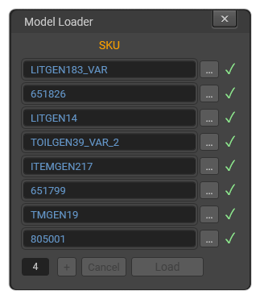

Поля Email и Password появляются только если Model Loader не смог войти автоматически.
Введи данные своего аккаунта на nfinite.app и нажми Sign In — поля снова скроются. Повторно входить обычно не нужно.
Email and Password fields appear only if Model Loader could not sign in automatically.
Enter your nfinite.app account credentials and click Sign In — the fields will hide again. You usually don't need to sign in again.
Введи SKU модели в строку. Разделители - и _ равнозначны: 820001-VAR-01 и 820001_VAR_01 — одно и то же.
Много моделей: скопируй список SKU (по одному в строке) и вставь Ctrl+V — строки добавятся автоматически.
Кнопка «+» добавляет пустую строку вручную. После запуска батча она блокируется.
Type the model article number into the field. Separators - and _ are interchangeable: 820001-VAR-01 and 820001_VAR_01 are the same.
Multiple models: copy a list of SKUs (one per line) and paste Ctrl+V — rows are added automatically.
The «+» button adds an empty row manually. It is disabled after the batch starts.
Parallel — поле внизу слева, число одновременных загрузок (по умолчанию 4, диапазон 1–8). Обычно менять не нужно.
Нажми Load. Модели скачиваются параллельно и каждая добавляется в сцену сразу как скачается — без ожидания остальных.
Во время загрузки окно заблокировано. После завершения появится краткое окно ожидания (обновление сцены — время зависит от размера сцены), затем итог: Done. Added: X, errors: Y.
Все добавленные модели будут выделены в сцене.
Parallel — bottom-left field, number of simultaneous downloads (default 4, range 1–8). Usually no need to change.
Click Load. Models are downloaded in parallel and each one is added to the scene as soon as it's ready — without waiting for the others.
While loading the window is locked. After completion a brief wait window appears (scene update — time depends on scene size), then the summary: Done. Added: X, errors: Y.
All added models will be selected in the scene.
Если SKU нет в базе (красный фон) — можно указать файл вручную:
If the SKU is not in the database (red background) — you can specify a file manually: